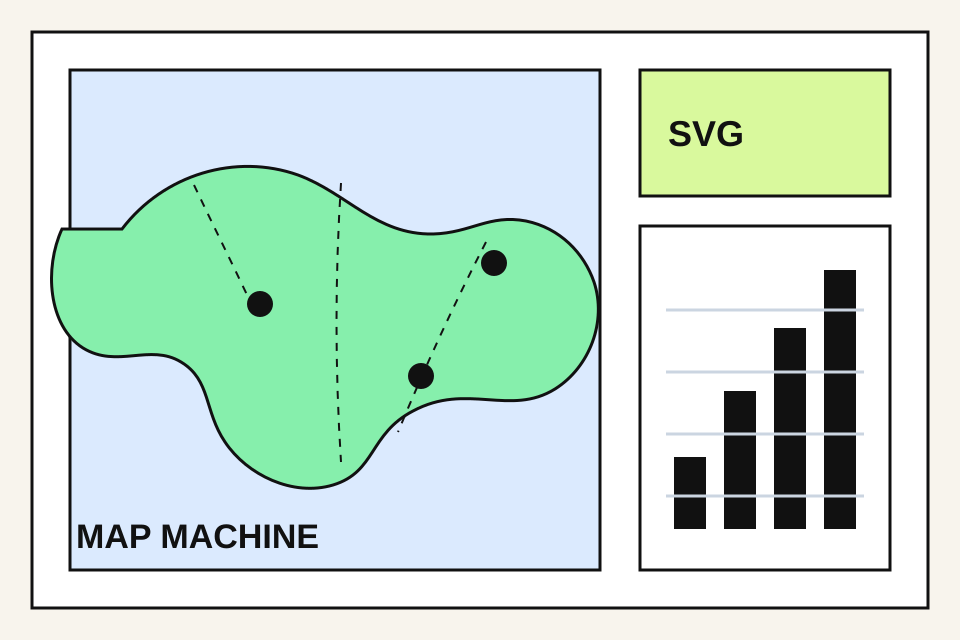
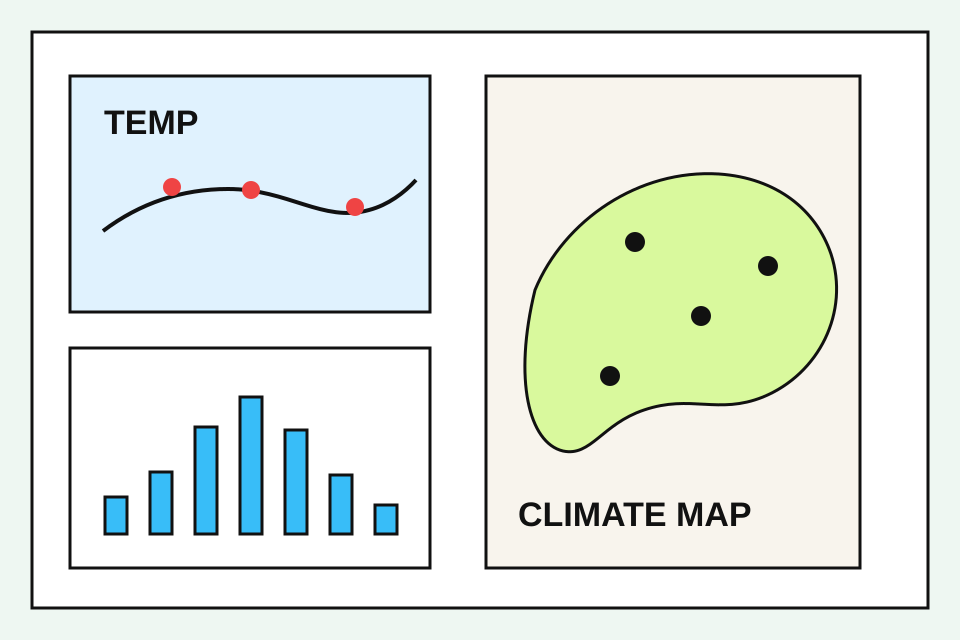
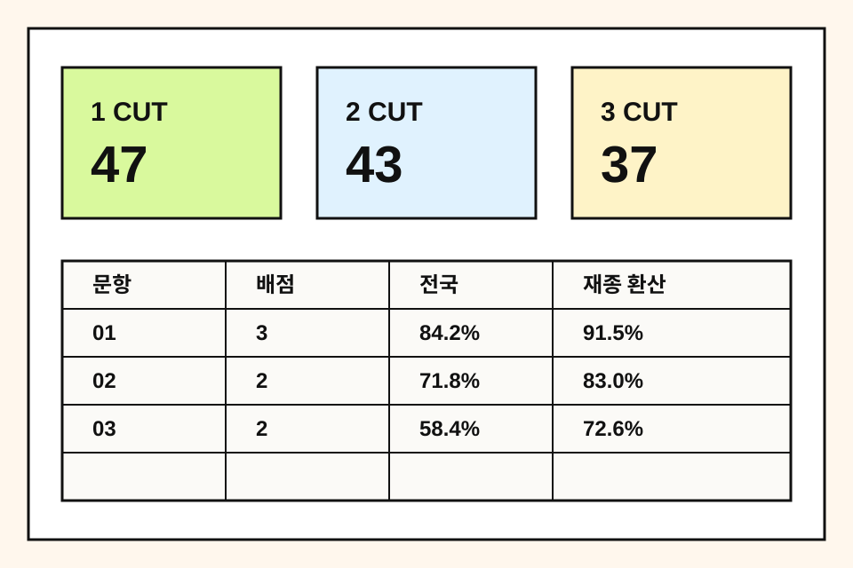

THE GEOGRAPHY WORKROOM
Promenade Geography
Map, Climate, Exam.
지도 편집, 기후 그래픽, 기출 문항과 컷 시뮬레이션을 한 흐름으로 다루는 수능 지리 유틸리티 포털입니다.
- Archive
- World and Korea map data
- Graphics
- Climate charts and tables
- Simulator
- Exam items with images


